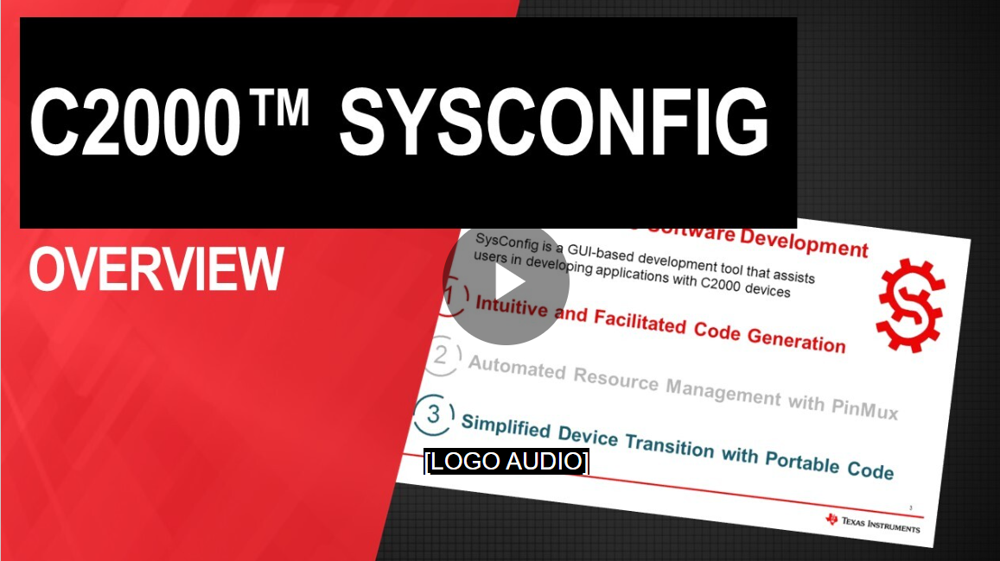
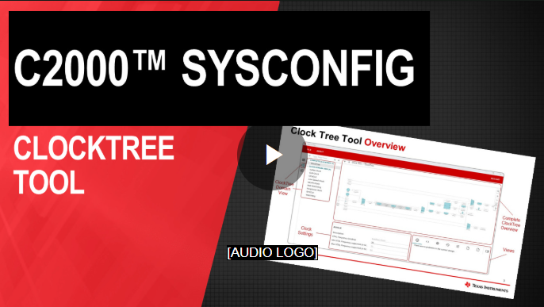
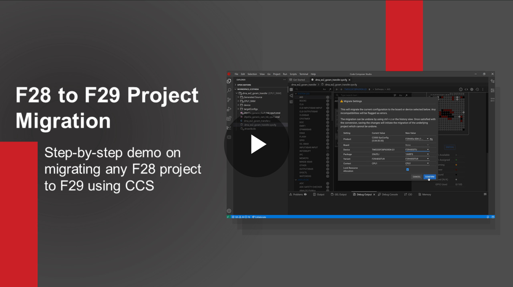
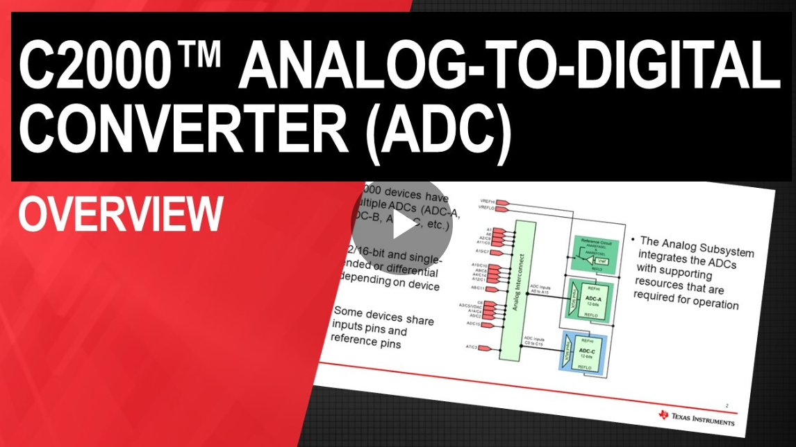
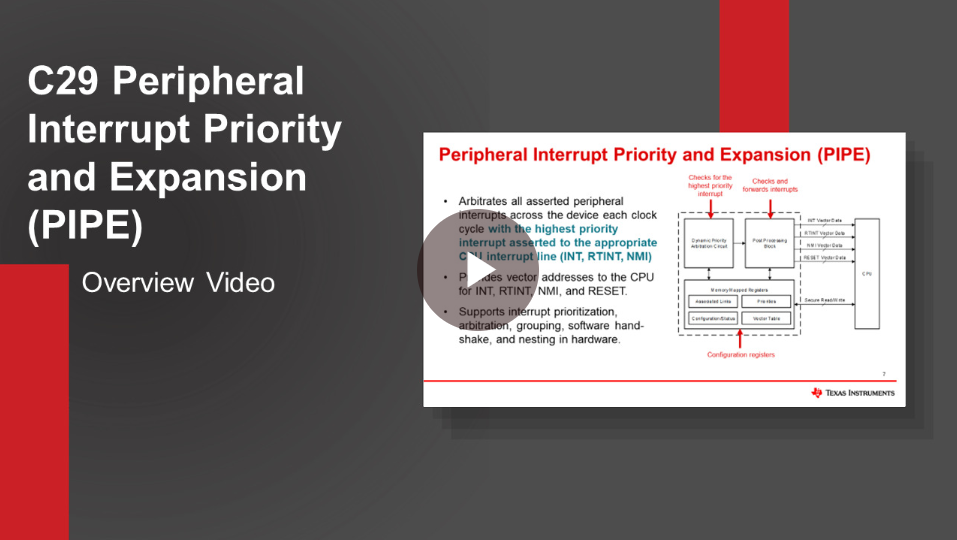
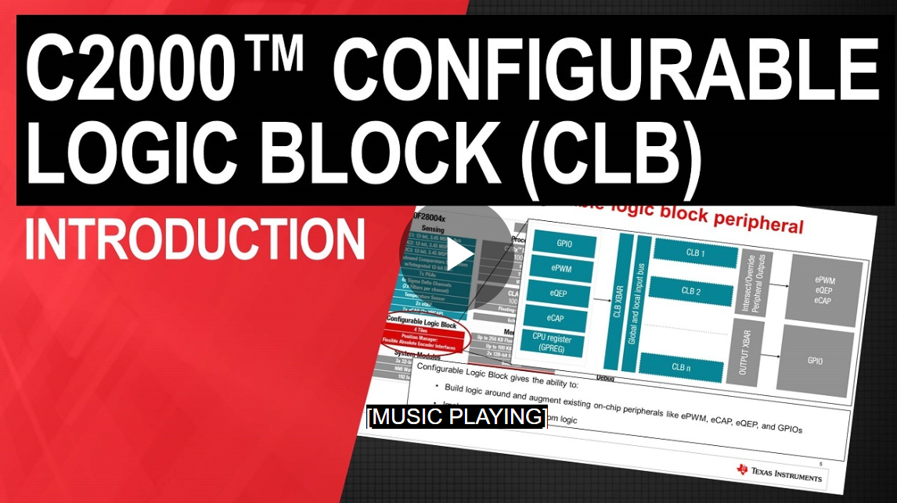
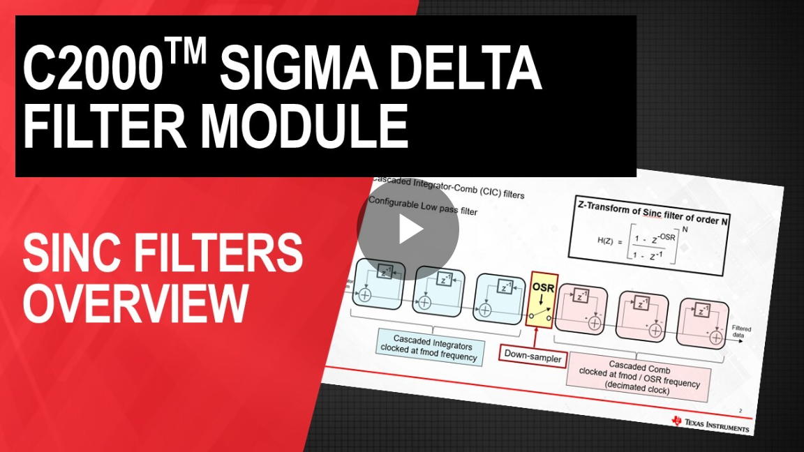
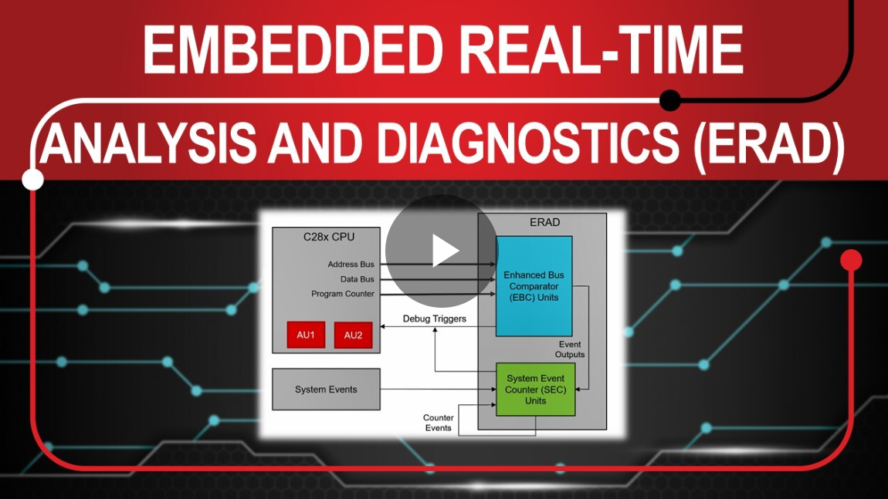
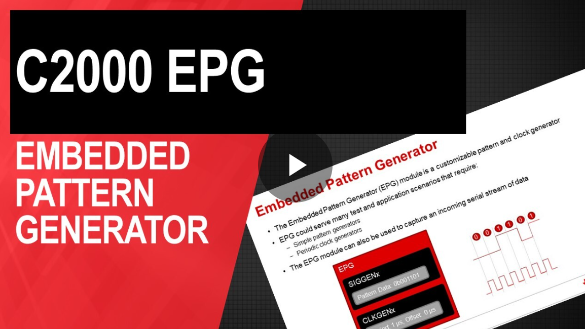

Key Videos#
Learn the basics of C2000 development#
TEXAS INSTRUMENTS

Get to know Code Composer Studio (CCS) as the integrated development environment (IDE) used with C29x devices.#
TEXAS INSTRUMENTS


Learn about SysConfig, the graphical user interface (GUI) tool designed to simplify hardware and software configuration.#
TEXAS INSTRUMENTS


This video highlights how you can use SysConfig to configure your device’s ClockTree.#
TEXAS INSTRUMENTS


This video presents a step-by-step guide to migrating a driverlib project from F28P65x to F29H85x using CCS and the SysConfig tool.#
Learn about C2000 device peripherals#
Please note that not all of the below are C29-specific
TEXAS INSTRUMENTS


An introduction to the Analog-to-Digital Converter (ADC) module.#

TEXAS INSTRUMENTS


An introduction to the C29x Peripheral Interrupt Priority and Expansion (PIPE) module.#
TEXAS INSTRUMENTS


An introduction to the Configurable Logic Block (CLB) module.#


TEXAS INSTRUMENTS


An introduction to the Sigma Delta Filter Modulator (SDFM) module.#
TEXAS INSTRUMENTS

See how to get devices to communicate via Controller Area Network (CAN).#
TEXAS INSTRUMENTS


An introduction to the Embedded Real-Time Analysis & Diagnostics (ERAD) module.#
TEXAS INSTRUMENTS


An introduction to the Embedded Pattern Generator (EPG) module.#
TEXAS INSTRUMENTS

An introduction to functional safety features on C2000 devices.#
To browse all TI videos, visit www.ti.com/video.